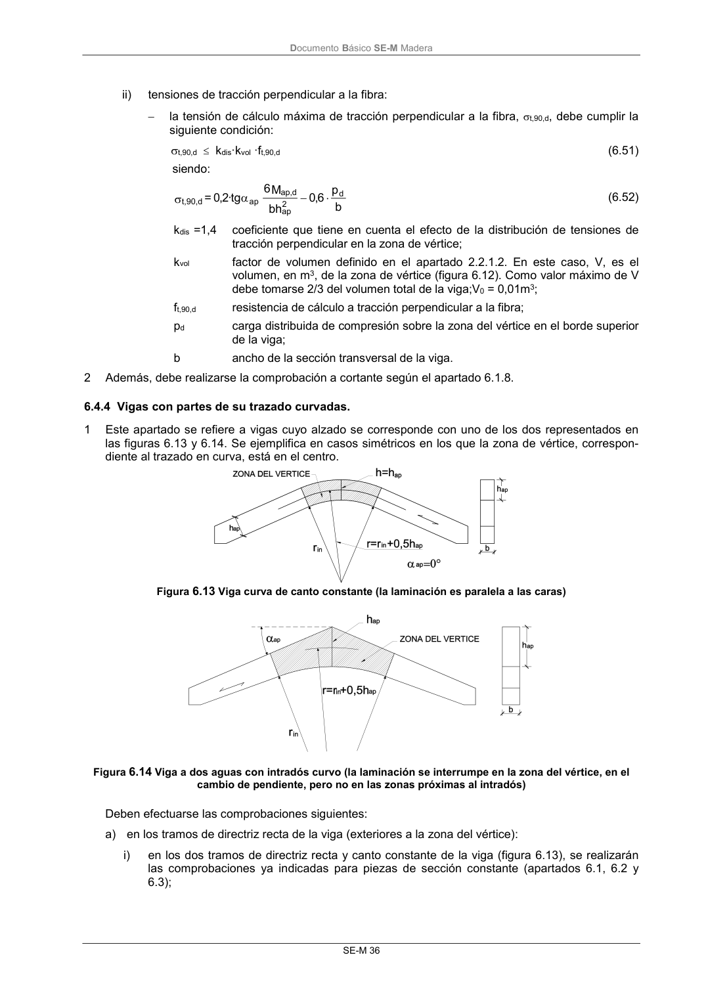

DB-SE-M Madera · edición 2019-12-20 · capa oficial
Documento DB-SE-M-oficial · SHA-256 del PDF 26b5819839ebfda78b0b119c5e76a0a37773b0d763c05688541870075df93718
Página física 42 de 132.
Copia fiel del PDF fuente · Fuente oficial
Ficha de la disposición en la fuente oficial
Formato: Texto de la página (Markdown)
Documento Básico SE-M Madera SE-M 36 ii) tensiones de tracción perpendicular a la fibra: la tensión de cálculo máxima de tracción perpendicular a la fibra, t,90,d, debe cumplir la siguiente condición: t,90,d kdis·kvol ·ft,90,d (6.51) siendo: b p 6,0 bh M 6 tg · 2,0 = d 2 ap d ap, ap d t,90, (6.52) kdis =1,4 coeficiente que tiene en cuenta el efecto de la distribución de tensiones de tracción perpendicular en la zona de vértice; kvol factor de volumen definido en el apartado 2.2.1.2. En este caso, V, es el volumen, en m3, de la zona de vértice (figura 6.12). Como valor máximo de V debe tomarse 2/3 del volumen total de la viga;V0 = 0,01m3; ft,90,d resistencia de cálculo a tracción perpendicular a la fibra; pd carga distribuida de compresión sobre la zona del vértice en el borde superior de la viga; b ancho de la sección transversal de la viga. 2 Además, debe realizarse la comprobación a cortante según el apartado 6.1.8. 6.4.4 Vigas con partes de su trazado curvadas. 1 Este apartado se refiere a vigas cuyo alzado se corresponde con uno de los dos representados en las figuras 6.13 y 6.14. Se ejemplifica en casos simétricos en los que la zona de vértice, correspon- diente al trazado en curva, está en el centro. Figura 6.13 Viga curva de canto constante (la laminación es paralela a las caras) Figura 6.14 Viga a dos aguas con intradós curvo (la laminación se interrumpe en la zona del vértice, en el cambio de pendiente, pero no en las zonas próximas al intradós) Deben efectuarse las comprobaciones siguientes: a) en los tramos de directriz recta de la viga (exteriores a la zona del vértice): i) en los dos tramos de directriz recta y canto constante de la viga (figura 6.13), se realizarán las comprobaciones ya indicadas para piezas de sección constante (apartados 6.1, 6.2 y 6.3);
